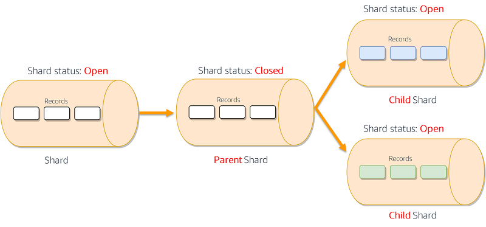
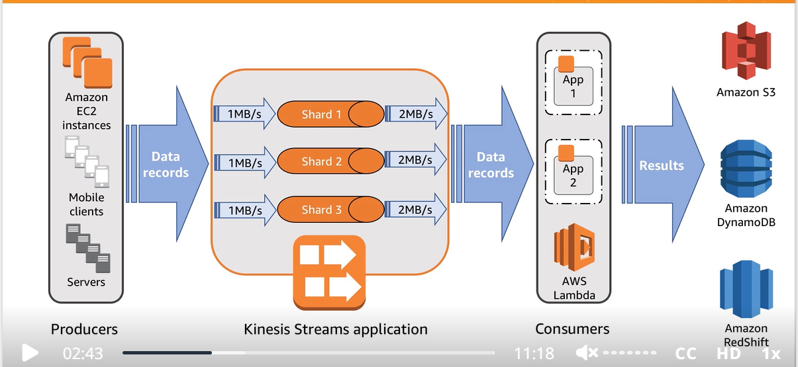
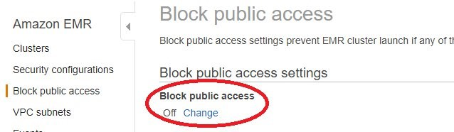

AWS Certified Data Analytics Specialty DAS-C01 Notes
Introduction
On May 27, 2023, I passed the AWS certification exam for the Data Analytics Specialty DAS-C01. I am sharing the notes I used to prepare for this exam.

Credits
Following are the resources that I used to prepare for the exam.
- AWS Skill Builder course Exam Readiness: AWS Certified Data Analytics – Specialty.
- Course ID: E-J0EK80
- AWS Skill Builder course AWS Certified Data Analytics - Specialty Official Practice Question Set
- Course ID: E-VX9ZK0
- AWS official exam guide AWS Certified Data Analytics - Specialty Exam Guide
- AWS official exam sample questions AWS Certified Data Analytics - Specialty Sample Questions
- Tutorials Dojo practice questions AWS Certified Data Analytics Specialty Practice Exams
Notes
Kinesis Data Streams
- Kinesis Data Streams synchronously replicate data across three Availability Zones in an AWS Region. Kinesis Data Streams is unsuited for data persistence or long-term storage. However, data will be retained for 24 hours, and you can extend the retention period by up to 7 days.
- Windowed queries types
- Stagger window: Stagger window is a windowing method suited for analyzing groups of data that arrive at inconsistent times.
- Tumbling window: When a windowed query processes each window in a non-overlapping manner, the window is referred to as a tumbling window.
- Sliding window : time-based window
- Kinesis shards don’t scale automatically and have to be done manually
- Kinesis data streams can’t write to S3 or Redshift directly, use Kinesis firehose instead
- Sharding a parent into child shards
- 
- After the reshard has occurred and the stream is again in an ACTIVE state, you could immediately begin to read data from the child shards. However, the parent shards that remain after the reshard could still contain data that you haven’t read yet that was added to the stream before the reshard. If you read data from the child shards before reading all data from the parent shards, you could read data for a particular hash key out of order given by the data records’ sequence numbers. Therefore, assuming that the data order is essential, you should, after a reshard, always continue to read data from the parent shards until it is exhausted. Only then should you begin reading data from the child shards.
- Enhanced fan-out is an Amazon Kinesis Data Streams feature that enables consumers to receive records from a data stream with a dedicated throughput of up to 2 MB of data per second per shard. Without the Fanout feature, 2MB read throughput is shared between all consumers of a shard.
- You can integrate your Kinesis data streams with the AWS Glue schema registry. The AWS Glue schema registry allows you to centrally discover, control, and evolve schemas while ensuring data produced is continuously validated by a registered schema. A schema defines the structure and format of a data record. A schema is a versioned specification for reliable data publication, consumption, or storage.
- Currently, Kinesis Data Streams and AWS Glue schema registry integration is only supported for the Kinesis data streams that use KPL producers implemented in Java. Multi-language support is not provided.
- To manually update the shard count, use ’ UpdateShardCount’ API
Amazon Kinesis Data Analytics
- Amazon Kinesis Data Analytics is the easiest way to transform and analyze streaming data in real-time with Apache Flink. Apache Flink is an open-source framework and engine for processing data streams. Kinesis Data Analytics reduces the complexity of building, managing, and integrating Apache Flink applications with other AWS services
- Kinesis Data Analytics takes care of everything required to run streaming applications continuously and scales automatically to match the volume and throughput of your incoming data. With Kinesis Data Analytics, there are no servers to manage, no minimum fee or setup cost, and you only pay for the resources your streaming applications consume.
- An Amazon Kinesis Data Analytics application can receive input from a single streaming source (e.g., Kinesis Data Streams) and, optionally, use one reference data source to enrich the data coming in from streaming sources. You must store reference data as an object in your Amazon S3 bucket. When the application starts, Amazon Kinesis Data Analytics reads the Amazon S3 object and creates an in-application reference table. Your application code can then join it with an in-application stream.
- Kinesis Data Analytics creates an in-application reference table and then loads the reference data immediately. Suppose that you want to refresh the data after Kinesis Data Analytics creates the in-application reference table, you can explicitly call the ‘UpdateApplication’ API.
AWS Kinesis Data Firehose
- Amazon Kinesis Data Firehose captures, transforms, and loads streaming data from sources such as a Kinesis data stream, the Kinesis Agent, or Amazon CloudWatch Logs into downstream services such as Kinesis Data Analytics or Amazon S3. You can write Lambda functions to request additional, customized processing of the data before it is sent downstream. AWS Lambda can perform data enrichment like looking up data from a DynamoDB table, and then produce the enriched data onto another stream. Lambda is commonly used for preprocessing the analytics app to handle more complicated data formats.
- Firehose automatically takes care of shards resizing
- Firehose is not real time. It is near real time. It buffers messages for a minute before sending them to destination. This service cannot be used for systems that has a real time processing requirement
Kinesis Producer Library
- The KPL PutRecords operation often sends multiple records to the stream per request. If a single record fails, it is automatically added to the KPL buffer and retried. The failure of one record does not impact the processing of other records in the request.
- Ways to develop Kinesis producers
- KPL
- Kinesis agent
- Kinesis streams API
Kinesis Consumer Library
- The KCL consumes and processes the data from a Kinesis data stream. The KCL also offers checkpointing, which means it stores a cursor in DynamoDB to track the records that have been read from a shard in a Kinesis stream. If a KCL worker fails while reading data from the stream, KCL can use that cursor and pick up from where the failed application left off.
- Two essential things to remember:
- Since KCL creates DynamoDB tables on your behalf, it’s essential to use unique application names in KCL for each application.
- You may run into provisioned throughput exception errors with DynamoDB if your stream has too many shards or if the application does frequent checkpointing.

- Each shard can support up to 5 transactions per second for reads, up to a maximum total data read rate of 2 MB per second, and up to 1,000 records per second for writes, up to a maximum total data write rate of 1 MB per second (including partition keys). The total capacity of the stream is the sum of the capacities of its shards.


Amazon Redshift
- Use the UNLOAD command to move data from Redshift to S3. This command can also be used to move Redshift query results to S3
- Use the COPY command to move data from S3 to Redshift
- Amazon Redshift can automatically sort and perform a VACUUM DELETE operation on tables in the background.
- To clean up tables after a load or a series of incremental updates, you can also run the VACUUM command, either against the entire database or against individual tables.
- Amazon Redshift automatically sorts data in the background to maintain table data in the order of its sort key. Amazon Redshift keeps track of your scan queries to determine which sections of the table will benefit from sorting.
- By default, VACUUM skips the sort phase for any table where more than 95 percent of the table’s rows are already sorted. Skipping the sort phase can significantly improve VACUUM performance.
- Related to incremental data loading into Redshift: There can be a scenario when data loaded into Redshift using a Glue job results in duplicate rows. To avoid this, first use the Glue job to create a staging table. Load all the data in the staging table. Now make a join between the staging table and Redshift table and perform the UPSERT operation.
- DISTSTYLE Distribution Key
- DISTSTYLE defines the data distribution style for the whole table. Amazon Redshift distributes the rows of a table to the compute nodes according to the distribution style specified for the table. The distribution style you select for tables affects the overall performance of your database.
- ALL
- Full replication on all nodes.
- Not suitable for small tables
- Good for slow-changing tables (less frequently updated)
- EVEN
- Data (rows) evenly distributed on all nodes. Each node has a small portion
- Good for tables NOT used in joins
- Use when not sure about KEY and ALL
- KEY
- Data (rows) distributed but similar data (based on a specified column) kept together on nodes
- Good for tables used in joins
- If the workload require high I/O performance then use dense computer nodes (DC2)
- Amazon Redshift workload management (WLM) queues enable users to flexibly manage priorities within workloads so that short, fast-running queries won’t get stuck in queues behind long-running queries. You can use workload management (WLM) to define multiple query queues and to route queries to the appropriate queues at runtime.
- To encrypt data on Redshift storage nodes you can use AWS KMS or HMS (hardware security module). Redshift can automatically connect with AWS KMS but not with HMS. For HMS we must use client and server certification to establish a trusted connection between them. We cannot enable encryption by modifying an existing cluster. For this we have to create a new cluster and migrate data to it.
- To create an external table in Redshift (i.e. a table with data on S3) use command “CREATE EXTERNAL TABLE”
- To increase the COPY command data transfer processing power, make sure that the files are multiple of the number of slices in the redshift cluster. Optimal file size is between 100MB and 1GB
- if your data has a fixed retention period, you can organize your data as a sequence of time-series tables. In such a sequence, each table is identical but contains data for different time ranges. You can easily remove old data simply by running a DROP TABLE command on the corresponding tables. This approach is much faster than running a large-scale DELETE process and saves you from having to run a subsequent VACUUM process to reclaim space. Time series tables are best for IoT devices data in Redshift. This is very much similar to the MySql table with partitions applied on the datetime column.
- Amazon Redshift is more cost-effective than Amazon Athena for frequently accessed reports i.e. the reports that are frequently accessed throughout the day
- You can take automatic snapshots of Redshift cluster BUT it takes a snapshot every 8 hours. For more frequent, use manul snapshots.
AWS Glue
- Glue uses DPU (Data Processing Unit) as a relative measure of processing power
- To improve performance, you can enable job metrics to estimate the number of DPUs to scale out Glue job
- Glue bookmarks from maintaining their state and prevent Glue from reprocessing old data. They are helpful in incremental data processing. Job bookmarks help AWS Glue maintain state information and prevent the reprocessing of old data. With job bookmarks, you can process new data when rerunning on a scheduled interval. The job bookmark implementation for the Amazon S3 source saves information so that when the job runs again, it can filter only the new objects using the saved information and recompute the state for the next job run. A timestamp is used to filter the new files.
- Glue also supports PySpark Scala dialect to write ETL scripts
- AWS Glue can be used to crawl and catalog data stored in S3 in different regions. Once cataloged, Athena can query the data from S3 in different regions
- AWS Glue does not directly support Apache Hive
- A classifier (used by Glue Crawler) reads the data in a data store. If it recognizes the format of the data, it generates a schema. The classifier also returns a certainty number to indicate how certain the format recognition was.
- AWS Glue provides a set of built-in classifiers, but you can also create custom classifiers. AWS Glue invokes custom classifiers first, in the order that you specify in your crawler definition. Depending on the results that are returned from custom classifiers, AWS Glue might also invoke built-in classifiers. If a classifier returns certainty=1.0 during processing, it indicates that it’s 100 percent certain that it can create the correct schema. AWS Glue then uses the output of that classifier.
- If no classifier returns certainty=1.0, AWS Glue uses the output of the classifier that has the highest certainty. If no classifier returns a certainty greater than 0.0, AWS Glue returns the default classification string of UNKNOWN.
- Glue PySpark transformation Relationize: Flattens a nested schema in a DynamicFrame and pivots out array columns from the flattened frame.
- Some of your organization’s complex extract, transform, and load (ETL) processes might best be implemented by using multiple, dependent AWS Glue jobs and crawlers. Using AWS Glue workflows , you can design a complex multi-job, multi-crawler ETL process that AWS Glue can run and track as a single entity. After you create a workflow and specify the jobs, crawlers, and triggers in the workflow, you can run the workflow on demand or on a schedule.
AWS IAM
- A resource policy is a policy that is attached to a resource rather than to an IAM identity. For example, in Amazon Simple Storage Service (Amazon S3), a resource policy is attached to an Amazon S3 bucket. AWS Glue supports using resource policies to control access to Data Catalog resources. These resources include databases, tables, connections, and user-defined functions, along with the Data Catalog APIs that interact with these resources.
AWS Athena
- Important AWS Blog Post: Top 10 Performance Tuning Tips for Amazon Athena
- We can connect to Amazon Athena using ODBC and JDBC drivers. This allows you to report and visualize all of your data in S3 with the tools of your choice.
- Athena cannot update the data. It can only perform “insert” and “select” operations. Athena writes files to source data locations in Amazon S3 as a result of the INSERT command. Each INSERT operation creates a new file, rather than appending to an existing file.
- Amazon Athena allows you to set two types of cost controls:
- per-query limit
- per-workgroup limit (a.k.a workgroup-wide data usage control limit)
- Workgroups allow you to set data usage control limits per query or per workgroup, set up alarms when those limits are exceeded, and publish query metrics to CloudWatch. The per-query control limit specifies the total amount of data scanned per query. If any query that runs in the workgroup exceeds the limit, it is canceled.
- Athena can only query the latest version of data on a versioned Amazon S3 bucket and cannot query previous versions of the data.
- Athena supports querying objects that are stored with multiple storage classes in the same bucket specified by the LOCATION clause. For example, you can query data in objects that are stored in different Storage classes (Standard, Standard-IA and Intelligent-Tiering) in Amazon S3. Athena does not support querying the data in the S3 Glacier.
- Suppose I have an Athena table with data on S3. I can query the table and it returns the results. Suppose that I partition the data on S3, then if I query the table again it will not return any data. This is because partitions information is not updated in Glue catalog. To load the information use query ‘MSCK REPAIR TABLE’
AWS EMR
- EMR File System (EMRFS) extends Hadoop to directly access data stored in S3 as if it is a file system
- Amazon EMR supports multiple master nodes to enable high availability for EMR applications. Launch an EMR cluster with three master nodes and support high availability. EMR clusters with multiple master nodes are not tolerant of Availability Zone failures. In the case of an Availability Zone outage, you lose access to the EMR cluster. Using the Amazon EMR version 5.7.0 or later, you can set up a read-replica cluster in a different availability zone, which allows you to maintain read-only copies of data in Amazon S3. If the primary cluster becomes unavailable, you can access the data from the read-replica cluster to perform read operations
- EMR cluster scaling is done in two ways:
- For older versions: Use “automatic scaling” with a custom policy
- Two commonly used metrics for “automatic scaling”:
- YarnMemoryAvailablePercentage : This is the percentage of remaining memory available for YARN.
- ContainerPendingRatio
- Two commonly used metrics for “automatic scaling”:
- For the latest versions: Use “Amazon EMR-managed scaling”. Or, use automatic scaling with a custom policy
- The difference between the two options is that in automatic scaling you have to choose the metric for scaling control, whereas in managed scaling, this is done automatically
- For older versions: Use “automatic scaling” with a custom policy
- Resize of the cluster is done in two ways
- Elastic resize : this is the fastest method and does not create a new cluster. While resizing, the cluster is put into read-only mode. Resizing takes around 10-15 mins
- Classic resize : this creates a new cluster. The old cluster is put into read-only mode till the new cluster is ready, and all the data is transferred to it. It can take hours to resize.
- EMR cluster can be created using RunJobFlow API call (e.g. from a Lambda function)
- Audit logs for an EMR cluster are enabled by default, and are stored on the master node. EMR also has the option to store these logs in an S3 bucket. To encrypt the logs use AWS KMS. EMR can automatically transfer logs to S3. This is a builtin functionality, and we don’t need Lambda or some other service to transfer logs from EMS master nodes to S3
- By default, all security configurations are disabled. You must re-create the cluster and enable them.
- EMR on Spot Instances can significantly reduce the computing costs for time-flexible, interruption-tolerant tasks. Always use on-demand instances for core nodes and spot instances for task nodes. In case of SLAs compliance, use “Provisioned Timeout” for spot instances.
- For each fleet, you can define a provisioning timeout. The timeout applies when the cluster is provisioning capacity and does not have enough Spot Instances to fulfill the target capacity according to the provided specifications. With the provisioning timeout, you can specify the timeout period and choose to switch to On-Demand capacity to fulfill the remaining Spot capacity and comply with the SLA.
- Users often forget to terminate the clusters after their work is done. This leads to the idle running of the clusters and in turn, adds up to unnecessary costs. To avoid this overhead, you must track the idleness of the EMR cluster and terminate it if it is running idle for long hours. There is the Amazon EMR native IsIdle Amazon CloudWatch metric, which determines the idleness of the cluster by checking whether there’s a YARN job running.
- Block Public Access configuration is an account-level configuration that helps you centrally manage public network access to EMR clusters in a region. You can enable this configuration in a region and block your account users from launching EMR clusters that allow unrestricted inbound traffic from the public IP address (source set to 0.0.0.0/0 for IPv4 and ::/0 for IPv6) through its ports.
- If your applications require specific ports to be open to the Internet, you can configure these ports (or port ranges) in the “block public access” configuration as exceptions to allow public access before you launch the clusters. Port 22 is an exception by default. You can configure exceptions to allow public access on a port or range of ports. In addition, you can enable or disable block public access. It is recommended that you enable it.
- 
- A transient EMR cluster is designed to terminate as soon as the job is complete or if any error occurs. A transient cluster provides cost savings because it runs only during the computation time, and it provides scalability and flexibility in a cloud environment
- Node Type – Each node has a role within the cluster, referred to as the node type. The node types are:
- Master node : A node that manages the cluster by running software components to coordinate the distribution of data and tasks among other nodes for processing. The master node tracks the status of tasks and monitors the health of the cluster. Every cluster has a master node, and it’s possible to create a single-node cluster with only the master node. Does not support automatic failover.
- Core node : A node with software components that run tasks and store data in the Hadoop Distributed File System (HDFS) on your cluster. Multi-node clusters have at least one core node. EMR is fault tolerant for slave failures and continues job execution if a slave node goes down.
- Task node : A node with software components that only runs tasks and does not store data in HDFS. Task nodes are optional.
AWS ElasticSearch (OpenSearch)
- Amazon OpenSearch lets you search, analyze, and visualize your data in real-time.
- Before you can search for data, you must index it. Indexing is the method by which search engines organize data for fast retrieval.
- In Elasticsearch, the basic unit of data is a JSON document.
AWS QuickSight
- For Quicksight to access Redshift, you need to add inbound rules for the security group of Redshift cluster nodes.
- To successfully connect Amazon QuickSight to the Amazon S3 buckets used by Athena, make sure that you authorized Amazon QuickSight to access the S3 account.
- Data encryption at rest is only available in the enterprise edition. It sports only AWS KMS. Active Directory connector (AD connector) is only available in the enterprise edition.
- Quicksight can’t visualize data in real-time or near real-time. Use OpenSearch and Kibana to achieve this.
- When you create a dataset using Amazon S3, the file data is automatically imported into SPICE. Data in SPICE can be updated at scheduled intervals
AWS S3
- S3 bucket throughput (# of read-write requests) is controlled at the prefix level (or folder). To increase the read throughput of data from S3, put the data under multiple prefixes
- Both Data Migration Service (DMS) and DataSync can be used to migrate data from on-prem to S3. DMS is suitable when migrating data from a database system, and datasync is suitable when migrating data from a file system
- ” S3Distcp” Apache DistCp is an open-source tool you can use to copy large amounts of data. S3DistCp is similar to DistCp, but optimized to work with AWS, notably Amazon S3.
- Using S3DistCp, copy data between different S3 buckets
- Copy data from HDFS to S3 and vice versa
- It cannot be used to move data to Redshift. For this, use COPY command
- _Athena can’t query S3 Glacier; you need to use Glacier select.
S3 Glacier select cannot select compressed files - Important file types

AWS Lambda
- AWS Lambda now supports Parallelization Factor, a feature that allows you to process one shard of a Kinesis or DynamoDB data stream with more than one Lambda invocation simultaneously. This new feature allows you to build more agile stream processing applications on volatile data traffic.
By default, Lambda invokes a function with one batch of data records from one shard at a time. For a single event source mapping, the maximum number of concurrent Lambda invocations equals the number of Kinesis or DynamoDB shards.
Now you can specify the number of concurrent batches that Lambda polls from a shard via a Parallelization Factor from 1 (default) to 10. For example, when Parallelization Factor is set to 2, you can have 200 concurrent Lambda invocations at maximum to process 100 Kinesis data shards. This helps scale up the processing throughput when the data volume is volatile and the IteratorAge is high.
AWS IoT
- AWS IoT provides cloud services that connect your IoT devices to other devices and AWS cloud services. AWS IoT provides device software that can help you integrate your IoT devices into AWS IoT-based solutions. If your devices can connect to AWS IoT, AWS IoT can join them in the AWS cloud services.
- AWS IoT Analytics automates the steps required to analyze data from IoT devices. AWS IoT Analytics filters, transforms, and enriches IoT data before storing it in a time-series data store for analysis. You can set up the service to collect only the data you need from your devices, apply mathematical transforms to process the data, and enrich it with device-specific metadata such as device type and location before storing it. You can then analyze your data by running queries using the built-in SQL query engine or perform more complex analytics and machine learning inference.
AWS CloudWatch
- EC2 detailed monitoring is not real-time. This is because detailed monitoring can at most send logs to CloudWatch in 1-minute intervals. For real-time logs collection, use KPL. Also note the CloudWatch filter subscription only works on data that is already available in CloudWatch.
- OpenSearch JVMMemoryPressure
- JVMMemoryPressure is a metric that indicates how much memory is being used by the Java Virtual Machine (JVM) in OpenSearch. A high JVMMemoryPressure value can indicate that the JVM is running out of memory, which can lead to performance problems and even outages.
- There are a number of reasons why JVMMemoryPressure can increase, including:
- Too many shards: If there are too many shards in your OpenSearch cluster, the JVM will need to allocate more memory to store the data.
- Large documents: If your documents are large, they will require more memory to store.
- Complex queries: Complex queries can require more memory to execute.
- Too many concurrent requests: If there are too many concurrent requests to your OpenSearch cluster, the JVM will need to allocate more memory to handle the load.
- Kinesis ProvisionedThroughputExceededException
- This error occurs when GetRecords calls are throttled by Kinesis Data Streams over a duration of time. This can happen if you are trying to read data from a stream faster than the provisioned throughput allows.
- There are a few things you can do to troubleshoot this error:
- Check your provisioned throughput. Make sure that you have enough provisioned throughput for the amount of data you are trying to read. You can increase the provisioned throughput for a stream by using the UpdateShardCount API.
- Use a smaller batch size. The GetRecords API allows you to specify a batch size, which is the number of records that will be returned in each call. If you are getting this error, try using a smaller batch size.
- Reduce the frequency of your requests. If you are getting this error, try reducing the frequency of your requests. You can do this by increasing the idle time between reads.
- Kinesis Data Analytics MillisBehindLatest
- The MillisBehindLatest metric indicates how far behind an application is reading from the streaming source. A value of 0 indicates that record processing is caught up, and there are no new records to process at this moment.
- There are a few reasons why the MillisBehindLatest metric might increase:
- Increased input data rate: If the input data rate increases, the application might not be able to keep up with the rate of data ingestion. This can cause the MillisBehindLatest metric to increase.
- Increased application latency: If the application latency increases, it can take longer for the application to process records. This can also cause the MillisBehindLatest metric to increase.
- Application errors: If the application encounters errors, it might not be able to process records. This can also cause the MillisBehindLatest metric to increase.
- EMR YarnMemoryAvailablePercentage
- The EMR YarnMemoryAvailablePercentage metric indicates the percentage of available memory on the cluster. A value of 100% indicates that all of the memory on the cluster is available. A value of less than 100% indicates that some of the memory on the cluster is being used.
- There are a few reasons why the EMR YarnMemoryAvailablePercentage metric might decrease:
- Increased memory usage: If the memory usage on the cluster increases, the YarnMemoryAvailablePercentage metric will decrease. This can happen if there are more applications running on the cluster or if the applications are using more memory.
- Reduced cluster size: If the cluster size is reduced, the YarnMemoryAvailablePercentage metric will decrease. This can happen if you terminate nodes from the cluster or if you create a new cluster with fewer nodes.
- Memory leaks: If there are memory leaks in the applications running on the cluster, the YarnMemoryAvailablePercentage metric will decrease. This can happen if the applications are not properly releasing memory that they are no longer using.
Amazon MSK
Here is a table that summarizes the key differences between Amazon Kinesis and Amazon MSK:
| Feature | Amazon Kinesis | Amazon MSK |
|---|---|---|
| Managed service | Yes | No |
| Open source | No | Yes |
| Flexibility | Less | More |
| Scalability | Less | More |
| Community | Smaller | Larger |
| Cost | Lower | Higher |
- Maximum size of a payload in Kinesis is 1MB. For streaming objects having a size greater than 1MB consider using MSK